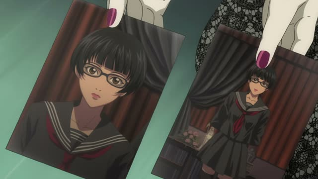

の (Possession)
Sakamoto Days · Episode 7
すいません、完全に俺のミスです。
"Sorry, that's completely my mistake."
の links two nouns: the owner first, then the thing. 俺 + の + ミス: my mistake. Like "'s" in English, but always in that order.
On this card, it answers "Whose mistake?": mine. Without の, 俺 and ミス would just sit next to each other with no link.
The same in polite and casual speech. 私の, 僕の, 俺の are simply how you say "my".

1 Litre of Tears · Episode 1
これ、お父さんの手作りだ。
"Dad made this himself."
の links the owner to the thing. On this card, お父さんの手作り is Dad's handmade thing, with casual だ at the end.
Quick Examples
Showing a friend a photo on your phone.
これ、僕の犬。
"This is my dog."
CasualAn umbrella is left by the door at work.
これは田中さんの傘ですか？
"Is this Tanaka-san's umbrella?"
PoliteTelling someone where you're eating tonight.
友達のお母さんの店に行く。
"I'm going to my friend's mom's shop."
You can chain の, just like 's 's in English.
CasualWith and without
車です。
"It's a car." Just what it is.
僕の車です。
"It's my car." Now you know whose.
Examples from Media

YouTube · video
火星のお菓子です。
"Sweets from Mars."
火星のお菓子: Mars's sweets. の works for places too, not just people.

YouTube · Morning Walk in Okinawa
僕の息子は最近よくハイハイします。
"My son has been crawling a lot lately."
Whose son? Mine: 僕の息子.

Death Note · Episode 13
これ、青山に行った日の私の写真です。
"This is a photo of me from the day I went to Aoyama."
私の写真 = "a photo of me". The owner (or who's in it) comes first, then の.

1 Litre of Tears · Episode 1
中学のバスケ部の後輩
"A kid from my middle school basketball club."
Two の in a row: middle school's basketball club's junior. Each の hangs the next noun on the one before.

Shirokuma Cafe · Episode 9
フランスの古い格言だよ
"It's an old French saying."
フランス + の = "France's", a saying from France.
Samurai Champloo · Episode 19
私の父なの。
"He's my father."

Shirokuma Cafe · Episode 6
僕の理想はね…
"My ideal is..."
僕の = my.
Teasing Master Takagi-san · Season 2, Episode 6
私の勝ち。
"I win."
私の勝ち: "my win".
Further Reading
A Dictionary of Basic Japanese Grammar
Entry "no¹" (possessive) · pp. 312–315
Tae Kim's Guide to Japanese Grammar
Noun-related Particles · The 「の」 particle